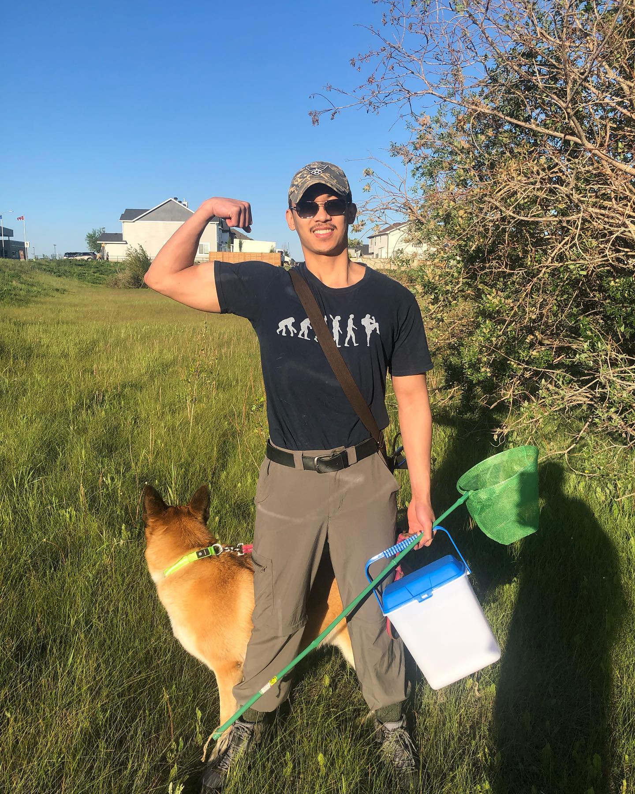
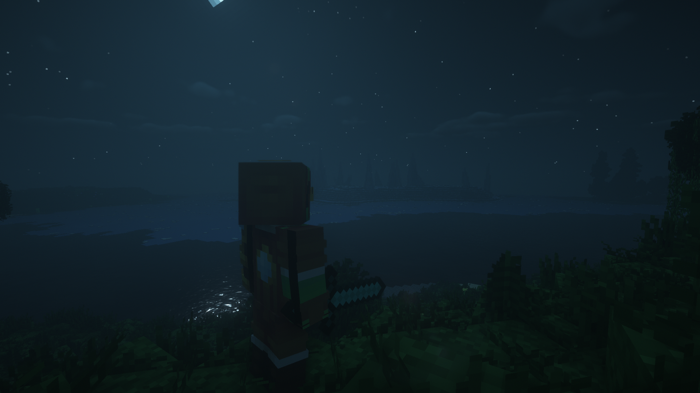

Creative-Logical Duality

Wonders are Simply a Prayer Away
Exploring Modifications | Logic-based Inferral/Inquiry cycles then Extrapolating to Solutions

I've spent years following Minecraft's modding community. I watched a technology ecosystem grow, and I learned a couple things... I can apply my experience in STEM; design and development; reseach and business. From utilizing digital technology to teach the 5 aspects of life and enhance our lifestyle, to achieving harmony of our civilization with the natural world, I have many interest. Ask me about domesticating black bears or Noah's Ark!
Five Aspects of Life
Spiritual/Mission
Health - Physically/Emotionally
Resources/Wealth
Intellect/Education/Career
Relationships/Community
STEM as I use it
Science
Research of Players
Research of Injury Recovery with Body Strengthening
Research of Domestication
Research of Earth Water Cycle, Geophysics/Geology, and Mount Ararat Deduction
Research of Designed Lifeforms
Research of Lifestyle to Diagnosis
Research of Achieving Health Potential
Research of Storytelling
Research of ecosystems and the larger system design
Technology
Information Technology
SAIT IT Software Development Diploma [COMPLETE]
CompTIA A+ [STUDYING]
CompTIA Network+ [NOT STARTED]
CompTIA Security+ [NOT STARTED]
CompTIA Server+ [NOT STARTED]
Software Architecture
Large-scale Systems
Microservices
Event-Driven Architecture
Data Oriented Programming
Object Oriented Programming
Functional Programming
Online Learning
Social Media
Software Development - Fullstack
Integrated Development Enviroment
Visual Studio Code
Eclipse
IntelliJ
Java
Spring
Javascript
ReactJs
C#
.NET
Unity
SpacetimeDB
Python
GO
Kotlin
Scala[NOT STARTTED]
Rust
Database
MySQL
MongoDB
MariaDB
SpacetimeDB
Game Development
Unity
Unreal Engine
UX/UI Design
Figma
Digital Art
Libresprite
Krita
Blockchain
AI
Gemini & Deep Research
ChatGPT
Sora
Engineering
Designing a Gamification System
Concurrent Game Mechanics Paradigm
Design of Variable-Region-Scope Energy/Material Re-distribution System
Designing of Ecosystem/Environment Domestication Concept
Designing Games and ESports
Designing of Interconnected Communities Physical to Digital
Designing Career & Education selection
Designing fitness regimens
Building natural environments of pets, enrichment by variable pets to other creatures and to humans
Engineering a game engine to support more specific user-based content